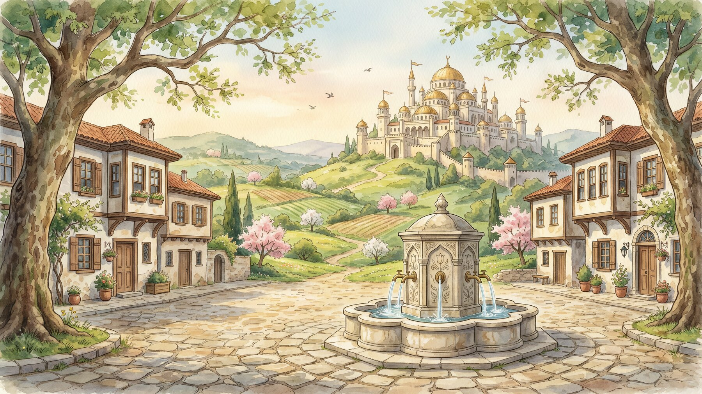
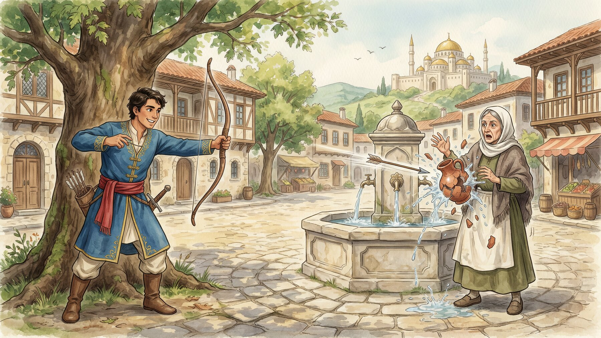
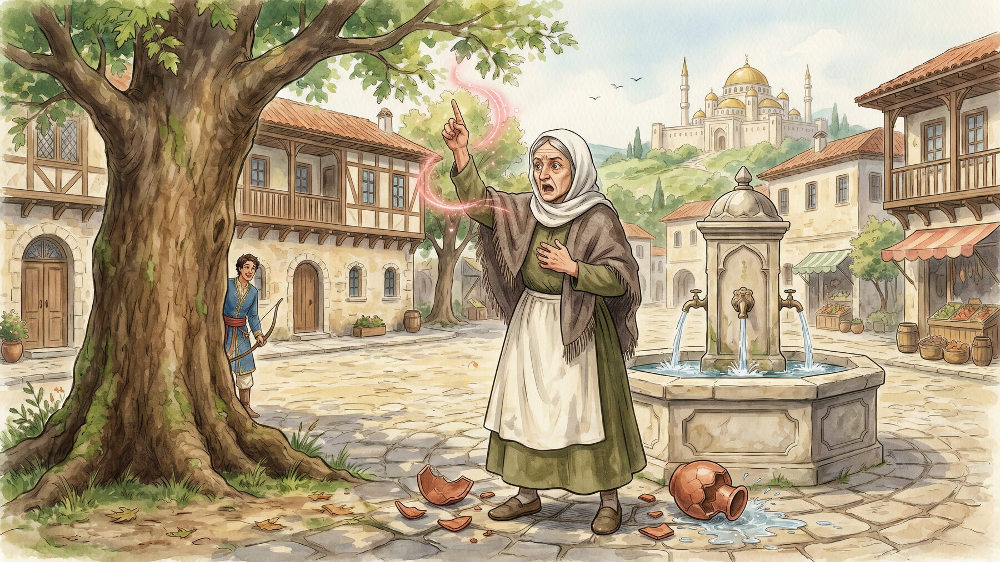
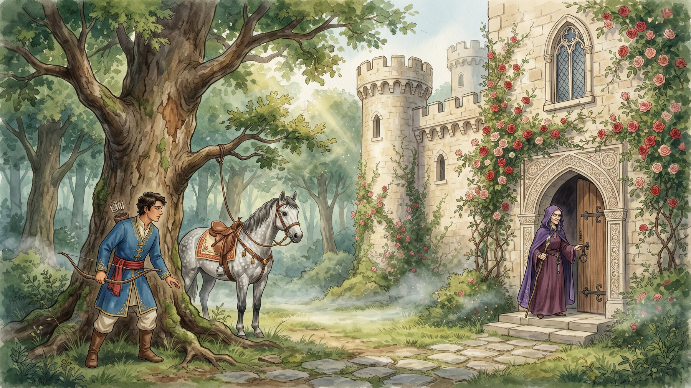
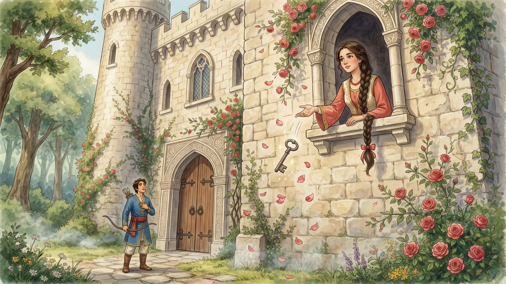
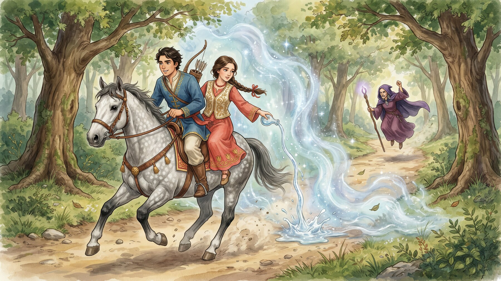
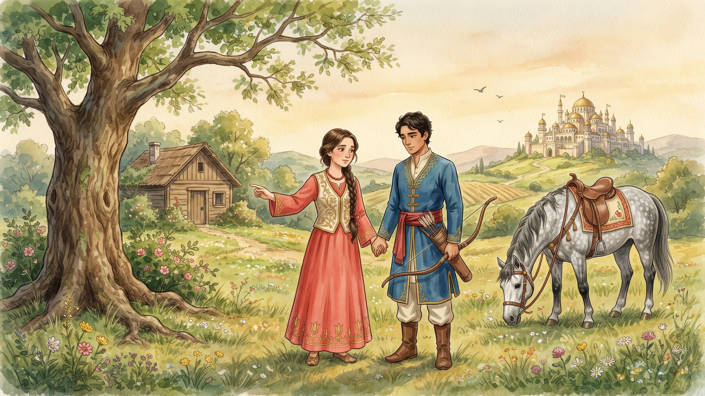
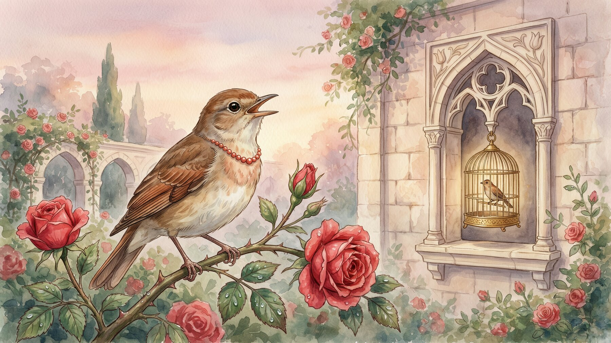
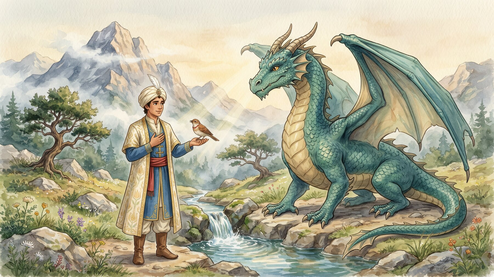
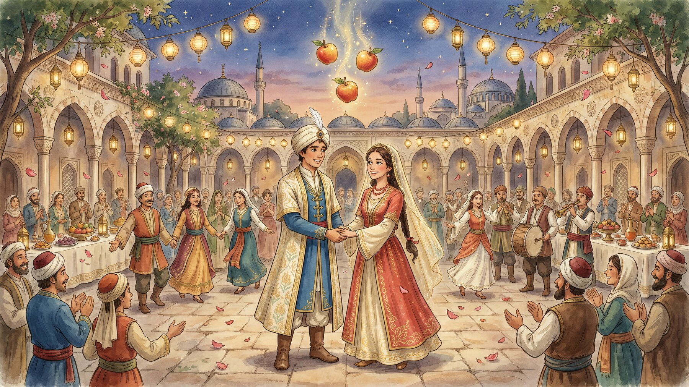

Bir varmış, bir yokmuş; evvel zaman içinde, kalbur saman içinde, yemyeşil ve çeşmeleri gürül gürül akan güzel bir ülke varmış.

Padişahın oğlu çok yakışıklı, bir o kadar da yaramazdı. Bir gün eğlence olsun diye çınarın arkasına saklandı ve yaşlı bir kadının su testisini okla kırdı.

Yaşlı kadın, oku atanı göremeden “Sen her kimsen, Mercan Kız’a âşık olasın!” diye beddua etti. Şehzade hiç görmediği Mercan Kız’a gönlünü kaptırdı; bir musibet bin nasihatten yeğdir.

Şehzade babasından izin alıp Mercan Kız’ı aramaya çıktı. Günlerce yol gittikten sonra güllerle kaplı yüksek bir şato buldu ve bir kadının anahtarla içeri girişini saklanarak izledi.

Kadın gidince şehzade sesini değiştirip “Mercan Kız!” diye seslendi; Mercan Kız, büyücü geldi sanıp anahtarı bıraktı. Karşısında yakışıklı bir genç görünce ona âşık oldu ve onunla gitmeye razı oldu.

Büyücü kadın sihirli değneğiyle peşlerine düşünce Mercan Kız sihirli suyu arkasına döktü ve aralarında büyük bir perde oluştu. Büyücü, “En az bir yıl kavuşamayasınız!” diye bağırıp geri döndü.

Mercan Kız, kavuşmaları bozulmasın diye bir yıl boyunca bir kulübede beklemeyi seçti. Şehzade babasını kaybedip tahta çıktı ve yılın dolmasını dört gözle bekledi.

Yıl dolmadan üç gün önce büyücü, Mercan Kız’ı bülbüle çevirdi. Bülbül, sarayın gül bahçesinde dertli dertli ötünce yakalanıp kafese konuldu; hükümdar o gece bülbülün Mercan Kız olduğunu rüyasında gördü.

Bilginlerin yol göstermesiyle Kaf Dağı’ndaki çeşmeye giden hükümdar, ejderhaya iyi niyetle seslenip derdini anlattı. Ejderha çeşmenin başından çekildi; tatlı dil yılanı deliğinden çıkarır. Bülbül suyu içer içmez yeniden Mercan Kız oldu.

Mercan Kız ile hükümdar kırk gün kırk gece süren bir düğünle evlendi. Sabreden derviş muradına ermiş. Gökten üç elma düştü: biri okuyanın, biri dinleyenin, biri yazanın başına.